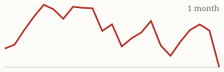
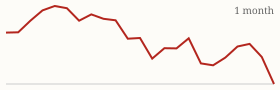

| Today's briefing for operators |
Top line: Cincinnati could be the first Midwest market to crack |
|
| Monday, November 2, 2026 | Late Edition | Curated from 63 voices on X |
|
Real Estate
Cincinnati Could Be the First Midwest Market to Crack
Listings have climbed to about 4,900, nearly back to 2019 levels, just as the metro's biggest employer announces a 37% corporate layoff.
By @nickgerli1 |
Cincinnati housing inventory chart. Image via @nickgerli1 on X | Nick Gerli points out that Cincinnati inventory has surged to roughly 4,900 listings, close to pre-pandemic levels, while Kroger, the metro's largest employer, is cutting 37% of its corporate staff. Prices have held up so far, up 2.2% year over year, but Reventure's forecast for Cincinnati has turned negative for 2027 (about -1.3%) for the first time in years. |
The CEO takeaway: the warning signs show up in inventory and local job news before they show up in prices. Rising supply plus a big employer shedding jobs tends to produce more motivated sellers, so watch those two numbers in every market you buy in and tighten your offer math before the comps catch up. |
|
| Read on X |
|
Mortgage Rates & Markets | Mortgage Rates Today's average lender rates | 30-year fixed | 7.27% | -0.02 | | 15-year fixed | 6.92% | -0.03 |
Daily change vs. prior day. Source: Mortgage News Daily, as of 10/30/2026 (updated weekdays about 4 PM ET). |
|
S&P 500 Close of Fri, Oct 30 (markets closed since; last close shown) S&P 500 7,580.07 ▼ -140.32 (-1.82%)  Yahoo Finance chart data (daily closes) |
|
Nasdaq Composite Close of Fri, Oct 30 (markets closed since; last close shown) Nasdaq Composite 25,437.00 ▼ -747.72 (-2.86%)  Yahoo Finance chart data (daily closes) |
|
| Real Estate & Deals | What Marketing Still Works Heading Into 2027 By @NickMaccini Nick Maccini's rundown: cheap pay-per-lead is still closing deals (he caps spend at $125 a lead), cold calling niche lists of motivated, high-equity owners works, and cold-call agencies work but need constant new markets and have a long cash cycle. He also says MLS deals and consistent social posting are still producing $25,000-plus deals and JV leads. Read on X |
Make the Deal Pencil as a Plain Rental By @Jacob_Naviaux Jacob Naviaux says the 2021 days of selling a property just by calling it a great Airbnb are over. Underwrite every deal on a normal long-term tenant's rent, and treat short-term, mid-term or co-living income as icing, not the reason to buy. Read on X |
Turn a Buyout Into a Partnership By @PaceJordanMorby Pace Morby's plan for a money-losing RV park: get it running and producing revenue, then refinance to pay off the seller and private lenders while the seller keeps part ownership. It's a reminder that a creative structure can win a distressed deal a straight cash offer can't. Read on X |
| AI Briefing | Claude plan renaming graphic. Image via @claudeai on X Claude Renames Plans, Drops a Limit By @claudeai Anthropic renamed its Claude plans (Max 5x is now Max at $100 a month, Max 20x is now Ultra at $200) and is removing the 5-hour usage limit for verified Ultra accounts. Weekly limits stay the same, and existing subscribers don't need to do anything. Read on X |
OpenAI Launches Private Intelligence By @OpenAI OpenAI announced Private Intelligence, which gives businesses stronger controls over their data while using its most capable models. It's aimed at companies that want frontier AI on their most sensitive work. Read on X |
AI Cuts Permit Review Time by 58% By @GoogleDeepMind Google DeepMind built PlanAssist with Gemini for UK planning officers, and it cut the time spent assessing home building and renovation applications by up to 58%. It's expanding to 12 more councils, a glimpse of faster permitting that could matter for anyone doing renovations. Read on X |
Claude Agents Red-Team Claude By @AnthropicAI Anthropic set thousands of Claude agents to sneak harmful training data past a safety monitor, then used what they found to build better monitors. An early sign that AI safety testing itself is being automated. Read on X |
Karpathy Built a Site in Two Hours by Talking By @karpathy Andrej Karpathy built and deployed a full website in about two hours using only Claude, handling just an API key, a server and a domain himself. His point: projects that used to take weeks can now be done before breakfast, so it's worth rethinking what your team could build. Read on X |
The Real AI Divide Is Curious vs. Afraid By @PeterDiamandis Peter Diamandis argues the gap won't be rich versus poor or young versus old, but people who lean in versus people who hold back. The tools are nearly free, so the only barrier is deciding to use them. Read on X |
An AI Content Machine at Scale By @Sabrina_Ramonov Sabrina Ramonov says pairing an AI agent with a tool that creates content, schedules it and automates DMs got her thousands of customers and 41.9 million views in 30 days. Read on X |
| Business & Leadership | Your Most Expensive Employee By @LeilaHormozi Leila Hormozi says the costliest person on a team isn't the one who misses goals, since you can let them go. It's the one who only hits the goal when you check in every week, because they never get fired and drain your time for as long as you allow it. Read on X |
Be the Best or the Cheapest By @AlexHormozi Alex Hormozi's reminder: being the best is a business plan and being the cheapest is a business plan, but sitting in the middle isn't. Worth asking which one your offer actually is. Read on X |
A-Players Attract A-Players By @AlexHormozi His other post of the weekend: if you can't find A-players, it's because you're not one yet. Hiring problems often start with the standard the leader sets. Read on X |
|
The Hyre Times is compiled each morning by Groky from public posts on X plus public rate and market data. Summaries reflect the authors' own claims and have not been independently verified. Not financial advice. © 2026 Hyre Times. |
|